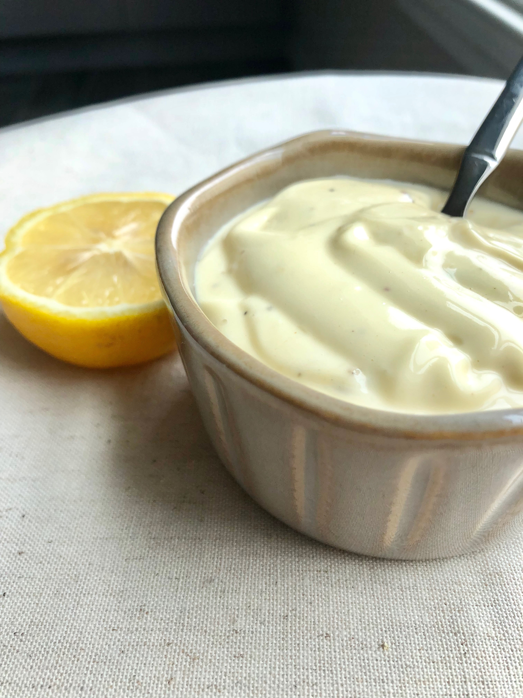

Homemade Mayo

Description
After realizing how quick and easy it is to make homemade mayo (and how much better it tastes) I will never buy store bought again!
All you need is an immersion blender, a few ingredients, and a couple of minutes to make the most delicious and creamy mayonnaise.
Ingredients
- ¾ cup light olive oil
- 1 large egg
- 1 tablespoon lemon juice
- 1 teaspoon Dijon mustard
- ½ teaspoon salt
- ¼ teaspoon ground black pepper (Optional)
Steps
- Place light olive oil, egg, lemon juice, Dijon mustard, salt, and pepper together in a bowl.
- Use a hand-held immersion blender to blend mixture together, placing the blade directly on top of the egg yoke
- Pull up the immersion blender slowly when fully emulsified, taking care not to over blend.
- Store in a tightly closed container; refrigerate until using.